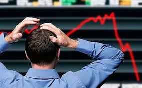

You and your merry little band of fellow organic nonGMO potato farmers decided to burn the fields. Because you just got rid of the largest and only farms of these organic nonGMO potatoes, an international crisis breaks out.
The supply curve for the potatoes shift so much that even getting one of these potatoes is a rare and costly thing. Inflation is on the rise as people gather to try and buy the potatoes before the markets run out. Inflation becomes so bad that money has no value anymore.
Congratulations! Money is a material thing, and now that you've gotten rid of it you don't have to worry about getting paid in only potatoes anymore!
The End.